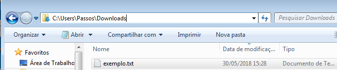

Universidade Atlântica
Manipulação de Ficheiros Texto em Python
Aula 09
Programação Avançada
Universidade Atlântica
Aula 09
Fernanda Passos
Programação Avançada
Definição de ficheiro:
É um recurso para armazenamento de informação, que está disponível a um programa de computador.

.txt
"r""w""a"open:"r".exemplo.txt.
ficheiro será uma referência para ele.try-except.open só prepara para a leitura de um ficheiro.read: lê todo o ficheiro e retorna uma string com seu conteúdo texto.readline: lê apenas a primeira linha e a retorna em forma de string.readlines: lê todo o ficheiro e retorna uma lista de linhas (string).
read:
Um exemplo de ficheiro texto.
Este ficheiro tem 2 linhas.
readline:
Um exemplo de ficheiro texto.
readlines:
['Um exemplo de ficheiro texto.\n', 'Este ficheiro tem 2 linhas.\n']for.open), ele deve ser fechado depois de usado.close.sort de lista ou a função sorted."w".exemplo2.txt para escrita.
try-except.write: escreve uma string.writelines: escreve as strings de uma lista de strings.ficheiro = open("exemplo3.txt", "w")
lista = ["Primeira linha.\n", "Segunda linha.\n"]
*ficheiro.writelines(lista)
ficheiro.close()"a" de append, também prepara ficheiro para escrita.
try:
ficheiro = open("exemplo.txt", "r")
linha1 = ficheiro.readline()
print(linha1)
ficheiro.close()
except Exception as mensagem:
print(str(mensagem))except Exception as mensagem
mensagem.str(mensagem), obtemos a mensagem de erro que apareceria.
10
0 1 1 2 3 5 8 13 21 34